In the previous section, we introduced the term constructions and axioms
of a stratified  -calculus without motivation in terms of more
familiar mathematical approaches. In this section, we will describe
a motivation for this system and indicate its relationship with more
familiar type systems.
-calculus without motivation in terms of more
familiar mathematical approaches. In this section, we will describe
a motivation for this system and indicate its relationship with more
familiar type systems.
Stratified  -calculus is not a type system at all in the usual
sense. Terms in stratified
-calculus is not a type system at all in the usual
sense. Terms in stratified  -calculus do not have types. The
scheme of relative types serves only to restrict what
-calculus do not have types. The
scheme of relative types serves only to restrict what  -terms
(functions) can be defined. For example, the term x(x), which would
not make sense in a typed system, is meaningful in stratified
-terms
(functions) can be defined. For example, the term x(x), which would
not make sense in a typed system, is meaningful in stratified
 -calculus, but the term
-calculus, but the term
 is not.
is not.
Although stratified  -calculus is an untyped system itself, it has
a close relationship with a typed system, consideration of which can help
us to see what is going on. We briefly introduce a quite conventional
typed
-calculus is an untyped system itself, it has
a close relationship with a typed system, consideration of which can help
us to see what is going on. We briefly introduce a quite conventional
typed  -calculus, then indicate how it can be restricted to get
a system related to our stratified
-calculus, then indicate how it can be restricted to get
a system related to our stratified  -calculus.
-calculus.
We restrict ourselves to pairing, function application and abstraction
as term constructions for the sake of simplification. We assume a
base type  of individuals. If
of individuals. If  and
and  are
types,
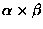
and
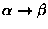
are types,
called product types and arrow types respectively. The inhabitants of
are to be understood to be pairs with first
projection of type
are
types,
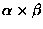
and
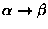
are types,
called product types and arrow types respectively. The inhabitants of
are to be understood to be pairs with first
projection of type  and second projection of type
and second projection of type  .
The inhabitants of
are understood to be
functions from type
.
The inhabitants of
are understood to be
functions from type  to type
to type  .
The types are exactly
those which can be constructed from
.
The types are exactly
those which can be constructed from  using the given type
constructors.
using the given type
constructors.
This motivates the following restrictions on our term constructions:
variables require type labels (we still have a countable supply of
each type); the projection functions 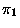
and  are replaced
by infinitely many different versions with type superscripts of the
forms
are replaced
by infinitely many different versions with type superscripts of the
forms
 and
and
 ,
respectively; any pair term is
still well-formed, but requires the appropriate product type
superscript; a function application term T(U) is only well-formed if
T has an arrow type
and U has type
,
respectively; any pair term is
still well-formed, but requires the appropriate product type
superscript; a function application term T(U) is only well-formed if
T has an arrow type
and U has type
 (the application term is then of type
(the application term is then of type  ); a
); a
 -term
-term
 is always well-formed if T is
well-formed, and has type
,
where
is always well-formed if T is
well-formed, and has type
,
where  is
the type of x and
is
the type of x and  is the type of T.
is the type of T.
In this system, a term like x(x) cannot be well-formed because no
type superscript appropriate to x can be constructed. A hint of the
advantage which we see in the stratified  -calculus can be
seen in the proliferation of projection functions in different types.
Similarly, there is a different identity function
-calculus can be
seen in the proliferation of projection functions in different types.
Similarly, there is a different identity function
 on each type
on each type  (inhabiting
(inhabiting
 ); this is a general phenomenon.
); this is a general phenomenon.
The restricted version of this type scheme which is related to
stratified  -calculus is obtained as follows. Its types are
labelled by natural numbers. Type 0 is to be identified with
-calculus is obtained as follows. Its types are
labelled by natural numbers. Type 0 is to be identified with
 .
Type n+1 is to be identified with
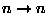(where n stands for the type already labelled by n). Further, we
identify type n with the product type
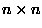
(this assumption
is harmless if types are understood to have infinitely many
inhabitants).
.
Type n+1 is to be identified with
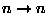(where n stands for the type already labelled by n). Further, we
identify type n with the product type
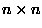
(this assumption
is harmless if types are understood to have infinitely many
inhabitants).
The inhabitants of type 0 are individuals, and enjoy a surjective pairing function under which each individual is identified with some pair of individuals. The inhabitants of type n+1 are the functions from type n to type n, for each n; it is easy to define the surjective pair on type n+1 in a uniform manner in terms of the pair on type n.
There is a great deal of polymorphism in this restricted type system.
In fact, every theorem which can be proved about types 0,1,2 has a precise analogue with each type label raised by one which can be
proved about types 1,2,3
has a precise analogue with each type label raised by one which can be
proved about types 1,2,3 ,
and each definable object in the
system using types 0,1,2
,
and each definable object in the
system using types 0,1,2 has an analogue defined in the same
way using types 1,2,3
has an analogue defined in the same
way using types 1,2,3 .
This polymorphism motivates the idea
of collapsing the type structure entirely: suppose that all the types
are in fact the same domain, but keep the restrictions on the
formation of abstractions inherited from the typed system, and we
obtain a stratified
.
This polymorphism motivates the idea
of collapsing the type structure entirely: suppose that all the types
are in fact the same domain, but keep the restrictions on the
formation of abstractions inherited from the typed system, and we
obtain a stratified  -calculus.
-calculus.
The practical application of this to working with Watson is to keep in
mind the relationship between relative types of objects in the
definition of a function in stratified  -calculus and the
concrete types of individuals, functions from individuals to
individuals (type 1), functions from type 1 functions to type 1
functions (type 2), etc., in this typed calculus.
-calculus and the
concrete types of individuals, functions from individuals to
individuals (type 1), functions from type 1 functions to type 1
functions (type 2), etc., in this typed calculus.
It might seem we lose expressive power through not allowing types such
as
 or
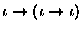
(functions from type 1 to type 0 and vice
versa), but these types are both readily coded into type 2. A
function from type 1 to type 0 is represented by a function of type 2
taking a type 1 function to the (type 1) constant function of the type
0 value of the coded function. A function from type 0 to type 1 is
coded by a function of type 2: values at constant functions of its
intended type 0 arguments of the coded function are the intended type
1 values, while values at nonconstant functions are ignored (they may
be taken to be a default value). A combination of these devices and
similar considerations about product types allows the coding of any
type in the simple type theory of Church. Experience suggests to us
that there is not any serious loss of mathematical fluency.
or
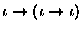
(functions from type 1 to type 0 and vice
versa), but these types are both readily coded into type 2. A
function from type 1 to type 0 is represented by a function of type 2
taking a type 1 function to the (type 1) constant function of the type
0 value of the coded function. A function from type 0 to type 1 is
coded by a function of type 2: values at constant functions of its
intended type 0 arguments of the coded function are the intended type
1 values, while values at nonconstant functions are ignored (they may
be taken to be a default value). A combination of these devices and
similar considerations about product types allows the coding of any
type in the simple type theory of Church. Experience suggests to us
that there is not any serious loss of mathematical fluency.
The use of the term ``stratified'' for well-formed  terms can
be motivated by considering the fact that we have to organize the
functions and arguments appearing in the specification of a new
function by a
terms can
be motivated by considering the fact that we have to organize the
functions and arguments appearing in the specification of a new
function by a  term into ``strata'' corresponding to the
integer types of our restricted type system. When considering a
complex term, it can be helpful to draw a diagram with horizontal
levels into which each object appearing in the
term into ``strata'' corresponding to the
integer types of our restricted type system. When considering a
complex term, it can be helpful to draw a diagram with horizontal
levels into which each object appearing in the  -term is
placed, and make sure that functions on one level are applied only to
arguments on the next level down.
-term is
placed, and make sure that functions on one level are applied only to
arguments on the next level down.
A final comment: the common practice of ``currying'' (replacing a
function of type
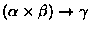
whose
typical value might be written f(x,y) with the related function of
type
 whose typical
(iterated) value might be written f(x)(y)) used in conventional
systems of typed and untyped
whose typical
(iterated) value might be written f(x)(y)) used in conventional
systems of typed and untyped  -calculus is not used in
stratified
-calculus is not used in
stratified  -calculus because it is not sound in terms of
relative type: in f(x,y) the relative types of x and y are the
same, while they are different in f(x)(y). This is the reason why
we have used the conventional notation f(x) for function application
rather than the notation fx more usual in combinatory logic and
-calculus because it is not sound in terms of
relative type: in f(x,y) the relative types of x and y are the
same, while they are different in f(x)(y). This is the reason why
we have used the conventional notation f(x) for function application
rather than the notation fx more usual in combinatory logic and
 -calculus (the latter notation lends itself better to
currying).
-calculus (the latter notation lends itself better to
currying).